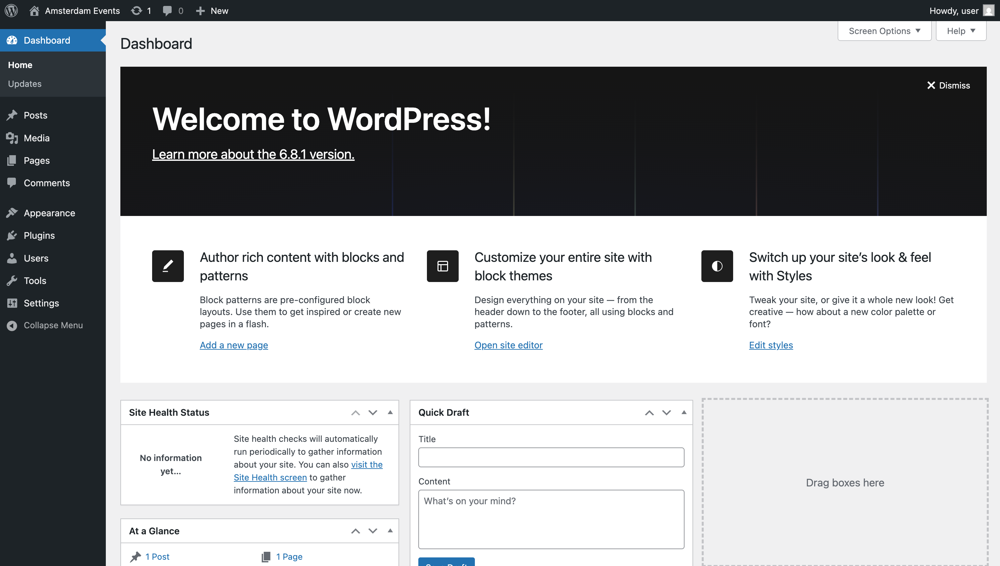
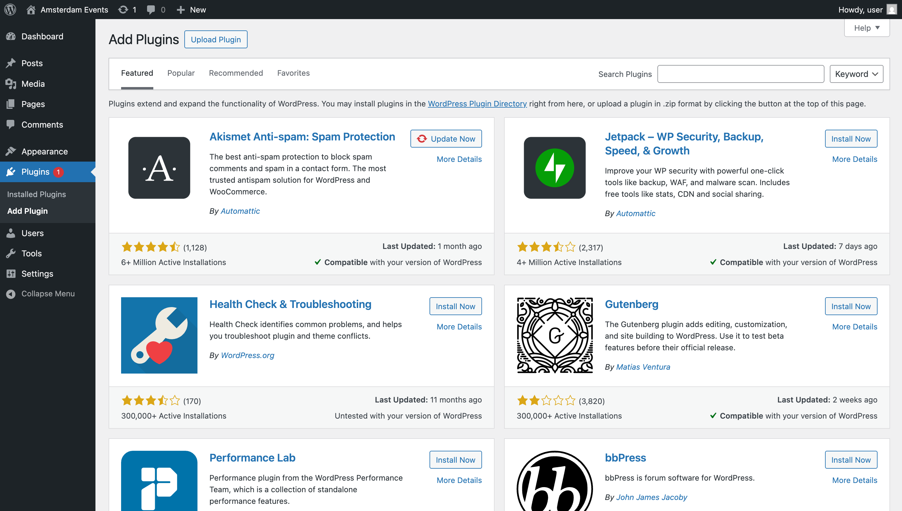
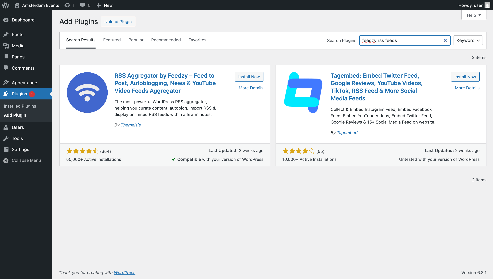
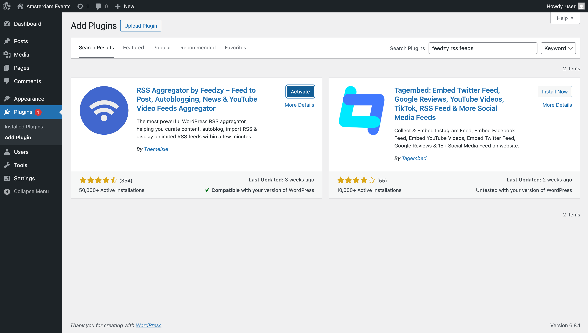
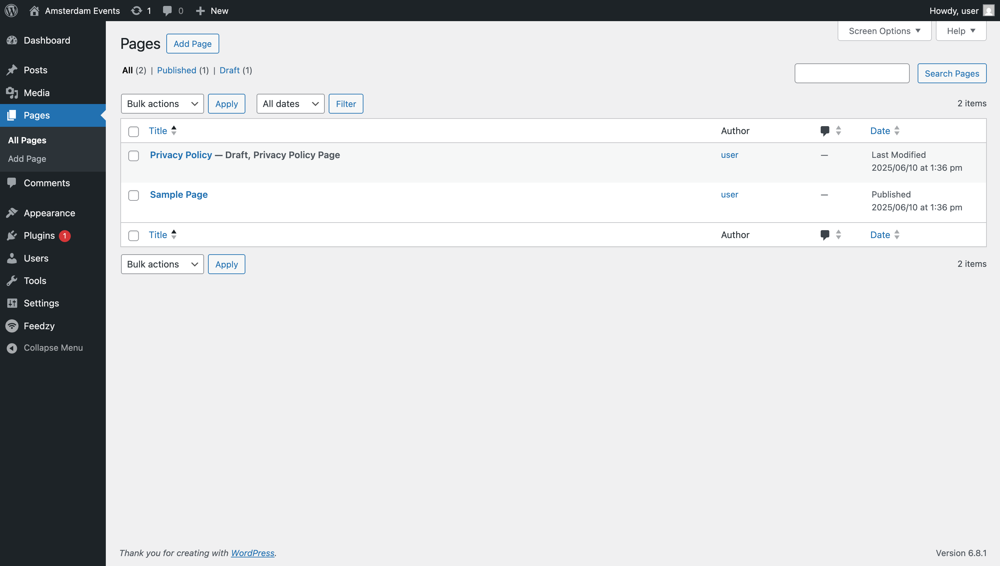
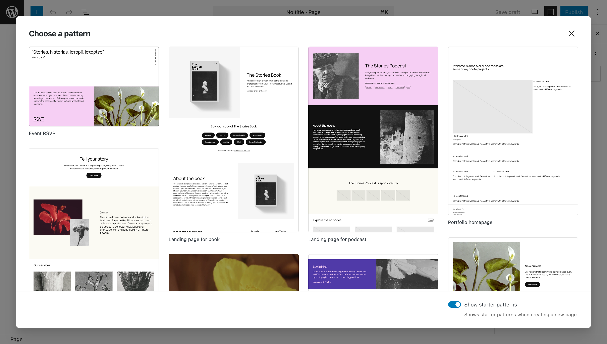
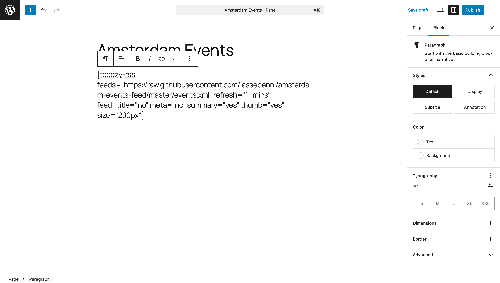
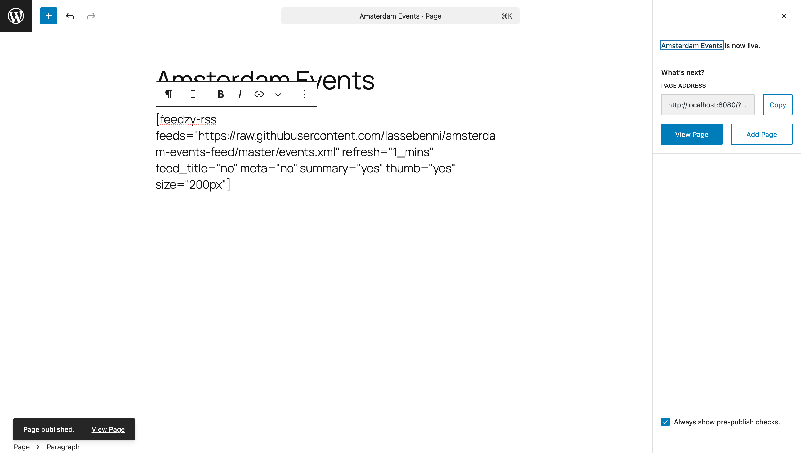
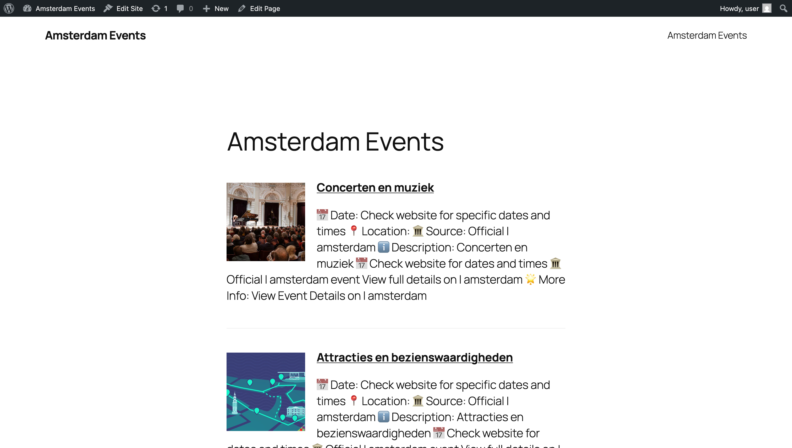

WordPress Admin
Guide: Amsterdam Events Feed
This guide shows you how to set up the Amsterdam Events RSS feed on
your WordPress site using the Feedzy RSS Feeds
plugin.
📋 Prerequisites
- A running WordPress instance at
http://localhost:8080
- Admin access to your WordPress site
- The
events.xml feed file accessible via a URL (e.g.,
hosted under your theme at
/wp-content/themes/custom/events.xml)
🎯 Overview
- Log into WordPress
- Install and activate the Feedzy RSS Feeds plugin
- Create an “Events” page and insert the Feedzy shortcode
- Set the Events page as the static front page
- View the live events feed
- Refresh the feed when needed
1. Log into WordPress
Open your browser and go to
http://localhost:8080/wp-admin.

WP Dashboard
2. Install and Activate
the Feedzy Plugin
- Navigate to Plugins > Add New.
- Search for Feedzy RSS Feeds.

Search Plugin
- Click Install Now on the Feedzy RSS Feeds
card.

Install Plugin
- After installation, click Activate.

Activate Plugin
3. Create the Events Page
- Go to Pages > Add New.

Pages List
- Click Add New.

Add New Page
Enter Events as the page title.
In the content editor, paste the Feedzy shortcode:
[feedzy-rss feeds="http://localhost:8080/wp-content/themes/custom/events.xml" max="12"]

Add Shortcode
- Click Publish.

Publish Page
4. Set as Static Front Page
- Navigate to Settings > Reading.
- Under Your homepage displays, select A
static page.
- Choose Events for the
Homepage.
- Click Save Changes.
5. View the Live Events Feed
Open http://localhost:8080 in your browser to see the
events grid.

Events Feed
🔄 Updating the Feed
When you need to refresh the events:
- Regenerate your
events.xml feed (e.g., run
make scrape).
- Ensure
events.xml is served from
/wp-content/themes/custom/events.xml.
- Reload your homepage to see the latest events.
Congratulations! You’ve successfully integrated the
Amsterdam Events feed into your WordPress site using Feedzy. 🎉